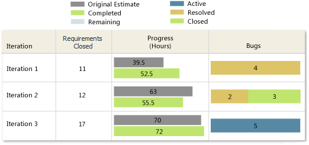

After work has progressed on several iterations, also known as sprints, you can view the team progress by viewing the Status on All Iterations report. This report helps you track the team's performance over successive iterations.
For information about how to access, refresh, or manage reports, see Reports (GovDev).
|
|
|---|
|
This report requires that the team project collection that contains your team project
was provisioned with SQL Server Reporting Services. This report is not available
if
|
|
In this topic |
You can use this report to answer the following questions :
|
Required Permissions
To view this report, you must be assigned or belong to a group that has been assigned the Browser role in Reporting Services. For more information, see Add Users to Team Projects or Managing Permissions.
 Data
in the Report
Data
in the Report
The Status on All Iterations report presents a snapshot of work that the team accomplished across several iterations, as the following illustration shows. The data is derived from the data warehouse.
For each iteration that is defined for the product areas that you specify, this report displays the following information:
-
Requirements Closed: The number of requirementss that have been closed. These values are derived from the current values specified for the iteration and the state of each requirement.
-
Progress (Hours): A two-bar numeric and visual representation that represents the values for Original Estimate (grey), Completed (green) and Remaining (light blue) based on the rollup of hours that are defined for all tasks. These values are derived from the current values that are specified for the iteration and the hours for each task.
-
Bugs: A numeric value and visual representation for all bugs, grouped by their current states of Active (blue), Resolved (gold) and Closed (green). These values are derived from the current values that are specified for the iteration and the state of each bug.
In addition, you can click an iteration to access the Burndown and Burn Rate report for that iteration. For more information, see Burndown and Burn Rate Report (GovDev).
Required Activities for Tracking Work Items
For the Status on All Iterations report to be useful and accurate, the team must perform the following activities for tracking work items:
-
Define use cases, tasks, and bugs, and specify the Iteration and Area paths for each.
 Note
Note
For information about how to define iteration and area paths, see Create and Modify Areas and Iterations.
-
Specify the Original Estimate, Completed , and Remaining fields for each task or subtask, and update the Completed and Remaining fields during the iteration.
 Important
Important
If you subdivide a task into subtasks, specify hours only for the subtasks. These hours are rolled up as summary values for the parent task and the use case. For more information, see Address Inaccuracies Published for Summary Values.
-
Update the State of each use case, task, and bug as it progresses from active to closed.
Interpreting
the Report
The Status on All Iterations report shows work progress across iterations that are defined for the product areas that you specify. For information about how to filter the report, see Filtering the Reportlater in this topic.
Questions Answered by the Report
You can review the report to determine how many use cases are ready to release and to better understand the rate of the team's progress. For example, you can find answers to the following questions:
-
Did the scope of work for each iteration closely match the team capacity?
-
Does the number of use cases closed in each iteration correspond to your expectations?
-
Is the team resolving and closing more bugs with successive iterations?
-
How many use cases can the team ship today?
Healthy Version of Report
A healthy Status on All Iterations report shows more progress with each successive iteration, as the following illustration shows.
Unhealthy Version of Report
An unhealthy Status on All Iterations report might show one or more of the following indicators:
-
No use cases were closed in one or more iterations.
You might want to review the use case size and determine whether the team can define smaller use cases.
-
The number of estimated and completed hours vary widely within or across iterations.
You might want to review how well you are sizing your use cases and how well the team is estimating work. When the estimated and completed hours match closely within an iteration, it indicates that the team is well positioned to progress at a known rate.
-
Inconsistent progress made across past iterations.
You might want to determine whether any blocking issues have not been identified or tracked.
-
Number of bugs being found is not increasing with each successive iteration.
Filtering
the Report
You can filter the Status on All Iterations report to show progress only for product areas that you specify.
To filter the work items that are displayed in the report
-
In the Area list, select the check box of each product area to include, and then click View Report.